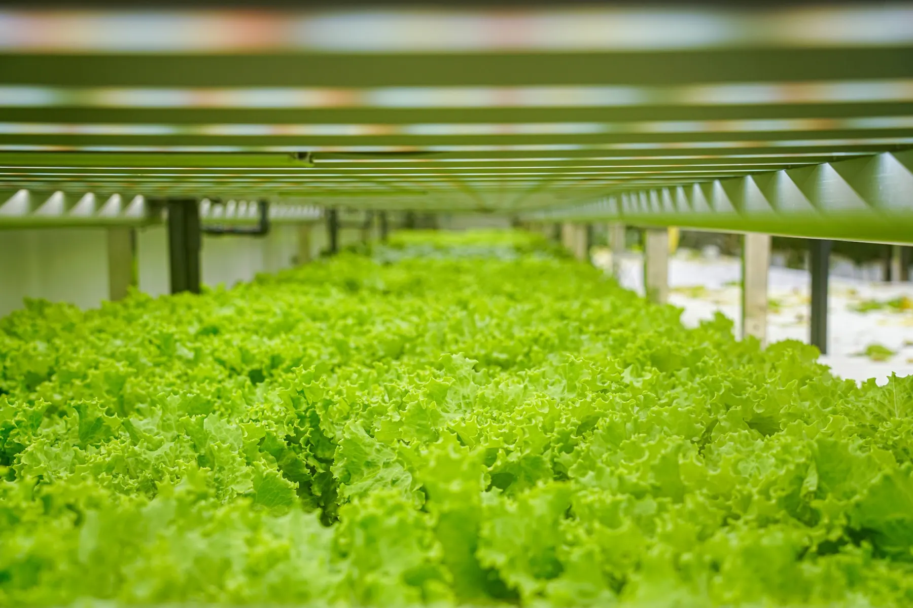
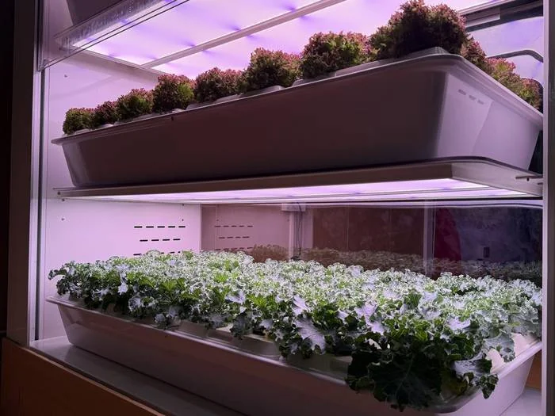
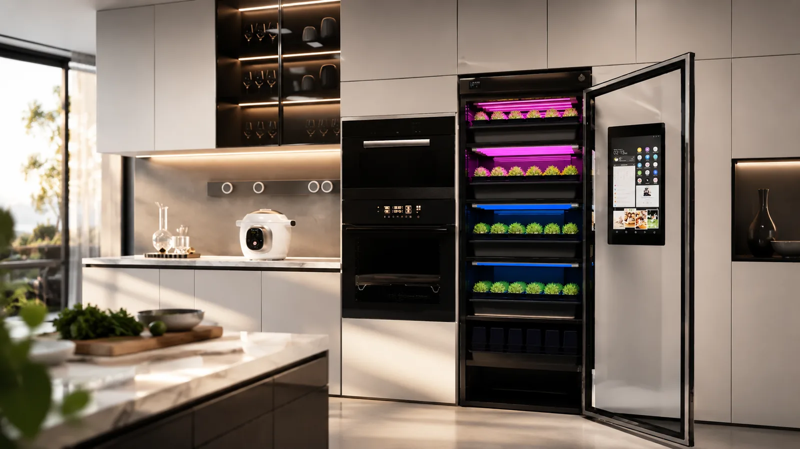
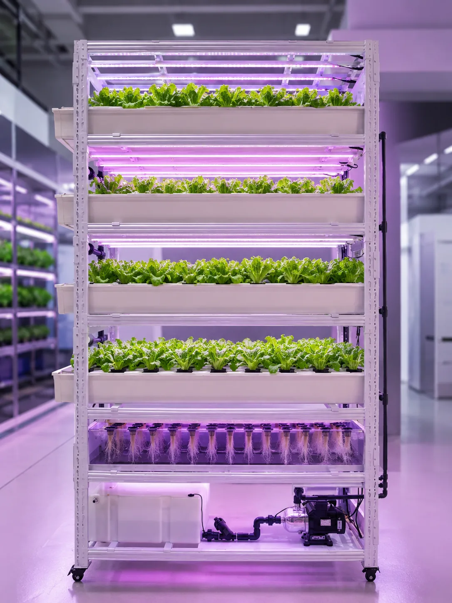
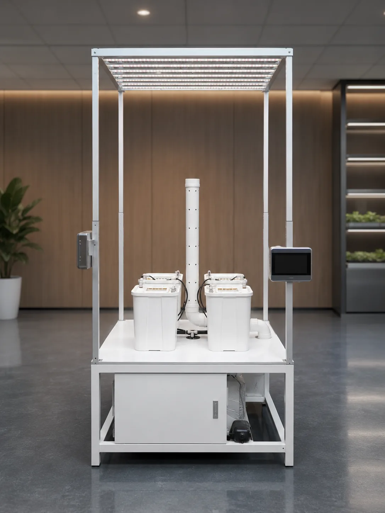
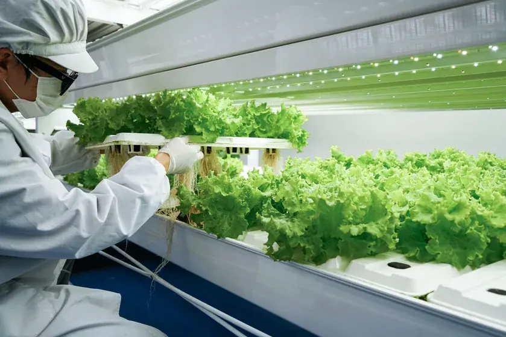
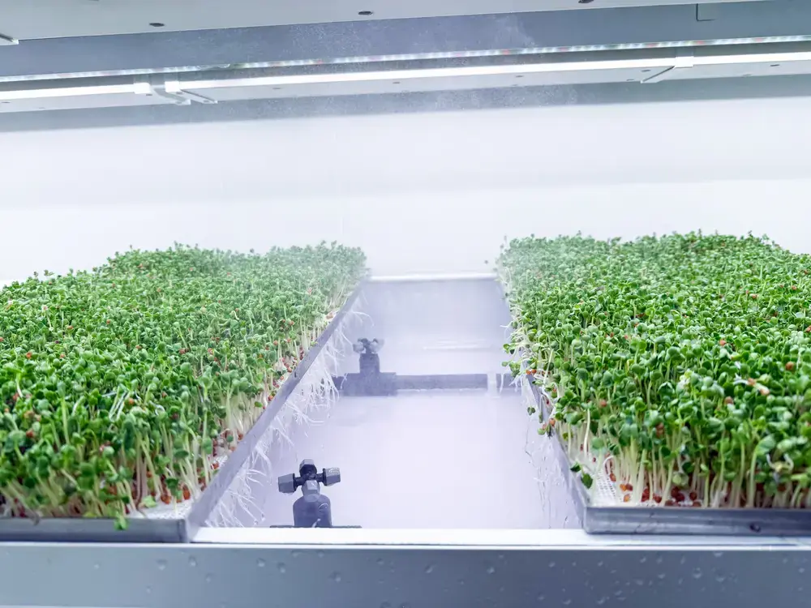

Container Farm
BioCube Container
Self-contained controlled environment container farms for crop-specific commercial indoor production.
Turnkey container farmClimate controlledCrop-specific
View full details →GROWSPEC Bio engineers aeroponic hardware, container farms, modular indoor farms, grow cabinets, propagation systems and AI-ready farm data into one premium CEA platform.


Predictive recipe active
A complete product family from compact front-of-house cabinets to container farms and modular commercial growing rooms. Product information is organized from the current GROWSPEC product library.
Self-contained controlled environment container farms for crop-specific commercial indoor production.

Scalable room-based CEA architecture for leafy greens, microgreens, strawberries and tall plant systems.

Compact indoor grow cabinet for restaurants, hotels, cafés, homes and premium fresh-produce display.

Controlled aeroponic research chamber for crop trials, education, biotechnology research and compact indoor production.

Professional microgreens cabinet system with 2-tier and 5-tier options for fresh production and premium visibility.

Five-layer aeroponic propagation rack for seedlings, germination, microgreens and early-stage crop production.

Professional compact aeroponic grow kit for specialty crop trials, tall plant setups and controlled cultivation projects.
The homepage now presents GROWSPEC as an AI-ready infrastructure provider: sensing, automation, crop recipes, remote monitoring and project-level data visibility.
Programmable lighting, climate and nutrient recipes organized around growth stage and crop objective.
Environmental telemetry supports stable decisions for temperature, humidity, CO₂, EC, pH and airflow.
System status and crop room performance can be viewed as an operational layer across farm assets.
Planning, ROI, capacity and operating assumptions are connected through a more detailed website structure.
Explore crop-specific systems, commercial farm models and integrated indoor farming workflows for different production goals.


Premium red and white strawberry production with climate and recipe control.

Dense short-cycle crops with clean root-zone visibility and tray workflows.
GROWSPEC Bio designs and manufactures aeroponic vertical farming systems and controlled environment agriculture equipment, from compact grow cabinets to commercial container farms and modular indoor farm systems.
GROWSPEC Bio combines aeroponic root-zone nutrition, programmable LED lighting, climate control, fertigation, IoT monitoring and modular farm engineering into scalable indoor farming solutions.
Send us your crop, space and production target. GROWSPEC will help model the system, output and ROI.